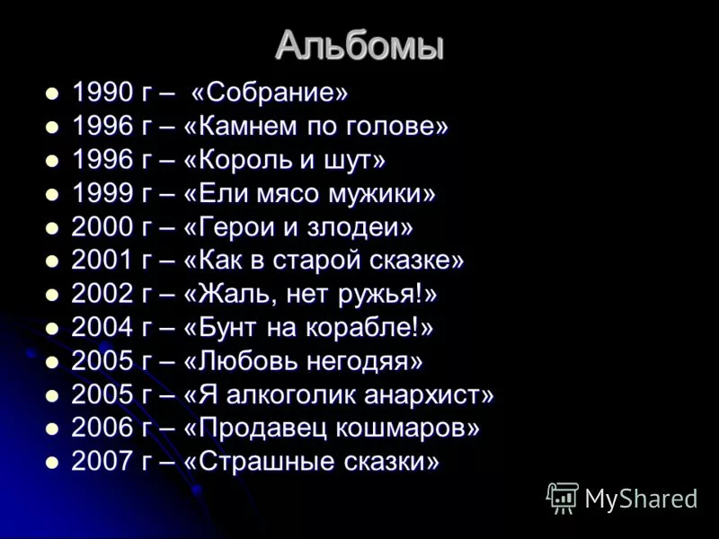

В 1988 году в Ленинграде у троих одноклассников — Михаила «Горшка» Горшенёва, Александра «Поручика» Щиголева и Александра «Балу» Балунова — возникла идея создания группы. Так появился проект с названием «Контора», который был ориентирован на игру в стиле «панк-рок» с соответствующими текстами и музыкой.
Знакомство "Горшка" и "Князя"Знакомство Михаила Горшенёва с Андреем «Князем» Князевым произошло в 1989 году в реставрационном училище Ленинграда. Они проходили практику в Эрмитаже, где получили работу, закончив училище. Эрмитаж выделил реставраторам мастерскую на Миллионной улице, где они организовали первую репетиционную точку группы «Король и Шут». Годом спустя знакомство кардинально изменило концепцию группы[15]. Князев пишет на музыку тексты, представляющие собой разнохарактерные мини-истории, в основе которых лежат сюжеты из русского фольклора, фэнтези, мифов и легенд. Большинство историй носит характер «страшных сказок», иные — юмористичный, шутливый оттенок.
Король и ШутНазвание «Король и Шут» группа взяла в 1990 году. До этого времени на обсуждение музыкантами выносились такие варианты, как «Зарезанный одуванчик», «Армагеддон», «Апокалипсис» и «Король Шутов», из которых последний и лёг в основу официального названия. В 1991—1992 годах на студии были записаны первые несколько песен группы: «Мёртвая женщина», «Охотник», «Король и Шут», «В долине болот», две из которых — «Охотник» и «В долине болот» — прозвучали по радио. Это был первый радиоэфир начинающей группы «Король и Шут». Первый раз перед публикой группа выступила в 1992 году в здании закрывшегося ленинградского рок-клуба на улице Рубиншейна, 13.
Начало популярности (1996—2000)В 1996 году к «Королю и Шуту» присоединился гитарист Яков Цвиркунов, благодаря которому аранжировки композиций и гитарное звучание группы вышли на качественно новый, профессиональный уровень. О «Короле и Шуте» была снята получасовая передача «Белая полоса», которая неоднократно транслировалась в эфире петербургского телевидения. Результатом съёмок этой программы стали четыре малобюджетных клипа на песни «Дурак и молния», «Внезапная голова», «Садовник» и «Блуждают тени». В этом году вышел в свет первый номерной альбом «Камнем по голове», записанный на студии «Мелодия». В том же году «Короля и Шута» пригласили выступить на крупном фестивале «Наполним небо добротой», организованном группой «ДДТ», а также принять участие в фестивалях, проходивших в московском ДК имени Горбунова и петербургском ДС «Юбилейный» с такими зарубежными панк-группами, как The Toy Dolls, The Stranglers, The Exploited. В 1997 году вышел второй альбом под названием «Король и Шут», который состоял из качественно записанных песен, входивших ранее в состав альбома «Будь как дома, путник…» (первоначальное название было возвращено альбому в 2000 году, после переиздания). Осенью того же года в группу был приглашён звукорежиссёр — Павел Сажинов. В 1998 году на студии «Мелодия» был записан «Акустический альбом», высоко оценённый музыкальными критиками за неординарность и редкую для панк-рок групп изобретательность в аранжировках. В записи приняли участие фолк-певица Марина Капуро, скрипачки Мария Бессонова, а также Мария Нефёдова, позже присоединившаяся к составу группы. Песня «Прыгну со скалы» принесла группе признание, моментально взлетев в чартах и впоследствии продержавшись на вершине хит-парада «Нашего радио» рекордный срок. С тех пор эта композиция стала одной из визитных карточек группы.
Пик популярности (2001—2003)Весной 2001 года группа отметила 10-летие. К юбилею «Король и Шут» выпустили сборник своих лучших песен — «Собрание», а также провели тур с концертами во всех крупных городах европейской части России, Сибири и Белоруссии. В рамках тура группа выступила с концертами в ДС «Юбилейный» (Санкт-Петербург) и на малой арене стадиона «Лужники» (Москва). 13 июля 2001 года совместно с группами «Алиса» и «Ария» «Король и Шут» выступили в Зелёном театре Парка им. Горького в стартовавшем концертном проекте «Пятница, 13». Группа заключила контракт на выпуск следующих трёх альбомов с компанией «Мистерия звука». 15 декабря 2001 года в «Лужниках» состоялась презентация альбома «Как в старой сказке». Песня «Проклятый старый дом» с этого альбома на протяжении полугода занимала первое место в хит-параде «Нашего радио» «Чартова дюжина», видеоклип на эту композицию имел ротацию на каналах MTV и МУЗ-ТВ. В начале 2002 года группа «Король и Шут» была удостоена премии «Побоroll» от «Нашего радио» в номинации «Выбор слушателей», а в апреле того же года по опросам журнала Fuzz была признана лучшей группой 2001 года. Ещё одну музыкальную премию — «Овация» — группа получила в мае 2002 года в номинации «Лучшая рок-группа года».
Временная линия

Неизвестные альбомы
Номерные альбомы Король и Шут
Официальные сборники
Концертные альбомы Король и Шут